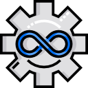

GitHub
Call Us
WhatsApp
Join Slack
Follow on X
Telegram
Email Us
Get Directions
Find us on Facebook
Chat on Messenger
Instagram
Pinterest
Reddit
Windzor Urena
DevOps Engineer | Software Engineer | AWS Services | Phyton | Java | Open for new challenges
LinkedInGitHub
Call Us
Join Slack
Follow on X
Telegram
Email Us
Get Directions
Find us on Facebook
Chat on Messenger
Privacy Policy | Build your own by forking LittleLink.